항공무선통신사 (2010-10-10 기출문제)
1과목: 전파법규
1. 다음은 항공기국의 검사에 관한 설명이다. 옳지 않은 것은?
- 검사관은 조사 목적으로 무선국 허가장의 제시를 요구할 수 있다.
- 명백한 위규사항이 관찰되는 경우에는 무선설비를 검사할 수 있다.
- 검사관은 통신사의 자격증 제시를 요구할 수 있다.
- 검사관은 통신사에게 직무에 관한 전문지식의 입증을 요구할 수 있다.
(정답률: 91%)

2. 다음 중 전파법에서 규정한 용어의 설명으로 옳지 않은 것은?
- 무선국이라 함은 무선통신을 위하여 허가 받은 시설만을 말한다.
- 송신설비는 전파를 보내는 설비로서 송신장치와 송신공중선계로 구성되는 설비를 말한다.
- 수신설비는 전파를 받는 설비로서 수신장치와 수신공중선계로 구성되는 설비를 말한다.
- 무선설비는 전파를 보내거나 받는 전기적 시설을 말한다.
(정답률: 79%)
3. 다음 중 30 [MHz]초과 300 [MHz]이하의 주파수대를 표시하는 약어는?
- VHF
- SHF
- UHF
- HF
(정답률: 84%)
4. 다음 중 무선국의 정기검사 유효기간이 옳은 것은?
- 실용화 시험국 : 3년
- 항공국 : 5년
- 실험국 : 2년
- 회전익항공기 및 초경량 비행장치의 의무항공기국 : 1년
(정답률: 83%)
5. 다음 중 급박한 위험상태에 있는 항공기국과 지상의 무선국 사이의 통상사용 전파가 불명인 때 사용 가능한 주파수는?
- 121.5 [MHz]
- 4,555 [MHz]
- 123.1 [MHz]
- 243 [MHz]
(정답률: 62%)
6. 다음 중 방송통신위원회가 추진하여야 하는 전파이용기술의 표준화에 관한 사항이 아닌 것은?
- 전파관련 표준의 제정
- 전파관련 표준의 보급
- 전파관련 표준의 적합인증
- 전파관련 표준의 등록
(정답률: 65%)
7. 다음 중 전파감시업무가 아닌 것은?
- 무선국에서 사용하고 있는 전파의 품질측정
- 혼신을 일으키는 전파의 탐지
- 무선국에서 발사한 전파의 도청
- 음란, 불온 및 허위통신의 감시
(정답률: 65%)
8. 전파관련 법령에 의한 의무항공기국의 무선설비의 기능확인 중 틀린 것은?
- 항공기의 비행 전에 그 설비가 완전히 동작할 수 있는 상태인 것을 확인하여야 한다.
- 항공기의 비행 후에 그 설비가 완전히 동작할 수 있는 상태인 것을 확인하여야 한다.
- 무선설비는 1천시간을 사용할 때마다 1회 이상 송신장치의 출력과 변조도를 확인하여야 한다.
- 무선설비는 1천시간을 사용할 때마다 1회 이상 수신장치의 감도와 선택도를 확인하여야 한다.
(정답률: 72%)
9. 다음 중 진폭변조, 단측파대의 전반송파를 나타내는 전파형식 표시기호는?
- A
- B
- H
- F
(정답률: 64%)
10. 항공이동업무국의 운용에서 책임항공국이 항공기국에 대하여 통신연락을 설정할 수 없는 경우의 일방송신 방법 중 틀린 것은?
- 책임항공국은 통신연락이 설정할 수 없는 경우 일방적으로 통보를 송신할 수 있다.
- 인근 책임항공국은 당해 항공기국과 최후로 사용한 전파로 일방적으로 송신할 수 있다.
- 항공기국은 수신설비의 고장으로 책임항공국과 연락설정을 할 수 없는 경우 책임항공국에서 지시된 전파로 일방송신을 할 수 없다.
- 항공기국이 일방송신을 행하는 때에는 “수신설비의 고장으로 인한 일방송신”등 약어를 먼저 보내고 행하는 그 통보를 반복하여 송신하여야 한다.
(정답률: 78%)
11. 무선국을 개설하고자 하는 자는 다음 중 누구의 허가를 얻어야 하는가?(오류 신고가 접수된 문제입니다. 반드시 정답과 해설을 확인하시기 바랍니다.)
- 지식경제부장관
- 방송통신위원회
- 전파방송관리국장
- 교육과학기술부장관
(정답률: 43%)
12. 항공기국에 의하여 안전목적에 국한되어 사용되는 주파수는?
- 156.2 [MHz]
- 156.5 [MHz]
- 156.8 [MHz]
- 157 [MHz]
(정답률: 54%)
13. 다음 통신 중 항공이동업무에서 가장 우선순위인 것은?
- 전기통신업무의 운용과 관련된 업무용 통신
- 무선방향탐지와 관련된 통신
- 우선권이 특별히 요구된 정부 메시지
- 국제연합(UN) 헌장의 적용과 관련된 메시지
(정답률: 80%)
14. 다음은 항공무선통신사 자격을 가진 자가 무선설비의 외부조정의 기술 운용 범위를 나타낸 말이다. ( )에 적당한 공중선전력은?
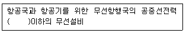
- 50와트
- 100와트
- 200와트
- 250와트
(정답률: 64%)
15. 다음 중 의무항공기국의 허가유효기간은?
- 10년
- 5년
- 무기한
- 3년
(정답률: 89%)
16. 다음 중 방송통신위원회가 전파이용기술의 표준화를 추진하는 직접적인 목적이 아닌 것은?
- 전파의 효율적인 이용 촉진
- 전파이용질서의 유지
- 전파감시업무의 효율적 수행
- 전파이용자 보호
(정답률: 72%)
17. 다음 중 업무종사의 정지를 당한 후 그 기간중에 무선설비를 운용한 경우의 벌칙은?
- 200만원 이하의 벌금
- 200만원 이하의 과태료
- 2년 이하의 징역 또는 2,000만원 이하의 벌금
- 2년 이하의 징역
(정답률: 70%)
18. 다음 중 변경허가를 받아야 하는 것이 아닌 경우는?
- 간이무선국의 동일 주파수대역내에서의 주파수 변경
- 송신공중선의 형식ㆍ구성 및 이득의 변경
- 공중선 전력의 변경
- 운영허용시간의 변경
(정답률: 64%)
19. 항공국의 허가유효기간 만료일 도래 시 재허가 신청기간은?
- 허가의 유효기간 만료전 1월 이상 2개월 이내
- 허가의 유효기간 만료전 1월 이상 4개월 이내
- 허가의 유효기간 만료전 2월 이상 4개월 이내
- 허가의 유효기간 만료전 2월 이상 6개월 이내
(정답률: 67%)
20. 다음은 비상사태가 발생한 때 방송통신위원회가 무선국에 대하여 취할 수 있는 조치이다. 옳지 않은 것은?
- 무선국의 개설허가를 취소
- 무선국의 운용휴지 명령
- 무선국의 운용정지 명령
- 무선설비의 변경 명령
(정답률: 36%)
2과목: 기초전파공학
21. 지상에 항공기의 교류나 직류를 제공해주는 전원공급장치는?
- APU(Auxiliary Power Unit)
- GCU(Generator Control Unit)
- GPU(Ground Power Unit)
- BPCU(Bus Power Control Unit)
(정답률: 53%)
22. 항공기내 무선설비 중 단파통신에서 송신지점으로부터 공간파가 처음 발사되어서 수신되는 지점까지의 거리를 도약거리(Skip Distance)라고 하며, 거리 내에서 지상파(지표파)도 받지 못하는 것은 무엇인가?
- 불감지대(Dead Zone)
- 페이딩(Fading)
- 라디오 덕트(Radio Duct)
- 케널리(Kenely)
(정답률: 58%)
23. 대전한 두 물체를 접근시켰을 때 작용하는 힘의 크기는?
- 두 물체가 가진 전기량의 제곱에 비례한다.
- 두 물체 사이의 거리의 제곱에 비례한다.
- 두 물체가 가진 전기량의 곱에 반비례한다.
- 두 물체간의 거리의 제곱에 반비례한다.
(정답률: 38%)
24. 항공기의 이ㆍ착륙을 허가하거나 항행에 필요한 정보를 제공하기 위해 관제탑과 항공기 사이에 사용되는 VHF 무선송수신기의 전파형식은?
- F3E
- A3E
- J3E
- H3E
(정답률: 49%)
25. 야기(yagi)안테나에 대한 설명이다. 옳지 않은 것은?
- 지향성은 투사기에서 도파기 쪽으로 향하는 단일 방향이다.
- 도선의 길이는 도파기, 투사기 및 반사기의 순으로 길이가 커진다.
- 반치폭은 60° 이다.
- 반사기는 용량성, 도파기는 유도성으로 작용한다.
(정답률: 25%)
26. SSR 모드 “S”의 특징이 아닌 것은?
- 목적 항공기에만 어드레스를 지정하여 질문을 할 수 있다.
- 교통량이 많은 곳에서도 목적기를 찾기 쉽다.
- 관제측과 항공기 사이에서 메시지나 데이터를 교환할 수 있다.
- 트랜스폰더의 응답에는 어드레스부호와 거리정보가 포함되어 있다.
(정답률: 24%)
27. 다음 중 항공기의 기내 인터넷을 서비스하기 위해 사용하는 무선LAN장비의 주파수, 전력밀도, 점유주파수대폭, 불요발사 등을 측정할 수 있는 측정 장비는?
- 오실로스코프
- 스펙트럼분석기
- Dip Meter
- Megger
(정답률: 47%)
28. 전파의 전리층 반사를 이용하여 장거리 통신이 가능한 안테나는 무엇인가?
- 장파안테나
- 중파안테나
- 단파안테나
- 파라볼라안테나
(정답률: 38%)
29. 면적이 5[m2], 권수 10회인 루프안테나를 1[MHz]의 수신용으로 사용할 때 실효고는 얼마인가?
- π
- π/2
- π/3
- π/4
(정답률: 34%)
30. 변조신호주파수가 200[Hz], 전압3[V]로 주파수변조[FM]하였을 때, 변조지수가 30이었다. 이 때 최대주파수 편이[△f]는 얼마인가?
- 2 [kHz]
- 6 [kHz]
- 9 [kHz]
- 1.8 [kHz]
(정답률: 36%)
31. ADF를 이용하여 비행할 때 주의하여야 할 사항이 아닌 것은?
- 계속적으로 국(Station) 식별신호를 감청하여야 한다.
- 정확한 TUNNING이 되어야 한다.
- 자연적인 환경에 민감하므로 뇌우지역을 피해야 한다.
- 가시거리(Line of Sight)이내에서만 수신하여야 한다.
(정답률: 52%)
32. RFID/USN(Radio Frequency Identification/Ubiquitous Sensor Network)의 주파수 분배를 바르게 나열한 것은?
- 135[kHz], 13.56[MHz], 908.5~914[MHz]
- 13.56[MHz], 908.5~960[MHz], 4.5[GHz]
- 135[kHz], 443.92[MHz], 900~700[MHz]
- 13.56[MHz], 135[MHz], 2.45[GHz]
(정답률: 39%)
33. 환상코일의 자체 인덕턴스는 다음 어느 매질의 상수에 따라 변화하는가?
- 절연저항
- 자속
- 유전율
- 투자율
(정답률: 30%)
34. 항공기용 기상레이더(Weather radar)의 안테나로 가장 적합한 것은?
- 브라운(Braun) 안테나
- 평판(Flat plate) 안테나
- 턴스타일(Turn stile) 안테나
- 휩(Whip) 안테나
(정답률: 38%)
35. 정류기의 평활회로는 다음 중 어느 것에 속하는가?
- 고역여파기
- 저역여파기
- 대역여파기
- 대역소거여파기
(정답률: 25%)
36. 전파고도계(Low range radio altimeter)에 관한 설명 중 틀린 것은?
- GPWS 또는 AFCS에 기압고도 정보를 제공한다.
- 2,500피트(ft) 이하의 저고도를 측정하는데 사용된다.
- 일종의 레이더로 주로 착륙할 때 이용된다.
- 항공기 이기종간에 호환성이 없다.
(정답률: 29%)
37. VOR에 이용되는 주파수의 범위는?
- 200 ~ 415 [kHz]
- 108.0 ~ 117.95 [MHz]
- 500 ~ 1,000 [kHz]
- 962 ~ 1,1⑤ [MHz]
(정답률: 44%)
38. 주파수 체배시 가장 많이 쓰는 증폭방식은?
- A급
- B급
- C급
- D급
(정답률: 59%)
39. 다음 중 항공로용 초단파(VHF) Marker Beacons과 관련 없는 것은?
- 주파수는 75[MHz] ±0.0⑤% 이어야 한다.
- 무선마커비콘은 95% 또는 100%이상 변조된 연속 반송파를 방사한다.
- 변조 톤의 주파수는 3,000 ±75[Hz] 이여야 한다.
- 전파의 방사는 반드시 원 편파만 사용하여야 한다.
(정답률: 53%)
40. 직류 발전기에 대한 설명 중 틀린 것은?
- 전기자(Armature)의 권선은 적층 철심에 감겨있고 자기장 내에 놓여 있을 때 큰 전압을 얻을 수 있다.
- 전기자의 권선은 전기 철심의 많은 홈에 많은 코일이 들어있어 발전전압의 크기가 변하고 불안정한 직류전압이 된다.
- 계자는 연철에 권선이 감겨있어 스스로 발생한 직류전압 또는 외부의 직류전원에서 전류가 들어와 전자석이 된다.
- 브러쉬는 카본이 사용되며 정류자와 접촉을 원활히 한다.
(정답률: 50%)
3과목: 통신보안
41. 비밀누설의 주요 요인이 아닌 것은?
- 과다한 통신소통
- 보고체제의 다원화
- 취약성 있는 통신망 이용
- 보안장비 이용
(정답률: 57%)
42. 다음 주파수대 중 통신보안상 가장 불리한 주파수대는?
- 초단파
- 극초단파
- 단파
- 장파
(정답률: 19%)
43. 보안자재의 관리요령 중 틀린 것은?
- 과거용, 현재용, 미래용을 분리 보관한다.
- 사용기간이 만료된 보안자재는 10일 이내에 반납한다.
- 보안자재는 매월 1회 이상 점검한다.
- 보안자재를 일반문서와 분리 보관한다.
(정답률: 52%)
44. 통신보안의 목적과 관계가 없는 것은?
- 비밀누설 가능성을 사전 제거한다.
- 획득하려는 정보와 획득한 정보의 분석을 지연시킨다.
- 통신에 의한 정보의 누설량을 최소화 한다.
- 통신에 의거 전달되고 있는 내용을 도청 분석한다.
(정답률: 46%)
45. 기만통신에 대한 방어대책과 거리가 먼 것은?
- 상호간에 약정된 통신확인표 사용
- 비밀내용의 평문소통 실시
- 상호간 상대통신사의 특성을 파악
- 의심스러울 때는 즉각 예비주파수로 전환
(정답률: 60%)
46. 도청을 올바르게 설명한 것은?
- 통신소의 위치 확인을 위한 수신행위
- 통신보안 위반사항 포착을 위한 수신행위
- 통신운용상태를 감독하기 위한 수신행위
- 통신내용을 탐지하기 위하여 몰래 엿듣는 수신행위
(정답률: 61%)
47. 각 기관 공통으로 사용할 암호자재는 어느 기관에서 제작 배부하는가?
- 행정안전부장관
- 국가정보원장
- 방송통신위원회
- 중앙전파관리소장
(정답률: 51%)
48. 무선전화의 통신보안 취약점으로 가장 적합한 것은?
- 언제 어디서나 통화할 수 있기 때문이다.
- 통화하는 사람이 특정인이기 때문이다.
- 무선전화의 이용자가 많기 때문이다.
- 사용자가 도청의 여부를 인지하지 못하고 중요내용을 평문통화하기 때문이다.
(정답률: 50%)
49. 다음 중 송신보안 방책에 해당하는 것은?
- 통신제원의 수시변경
- 암호, 평문 2중 송신의 금지
- 암호문에 대한 응답은 암호로 이행
- 암호조직의 보호
(정답률: 29%)
50. 다음 중 통신보안 교육을 받아야 할 사람은?
- 무선설비를 수리 의뢰한 자
- 무선통신 업무에 종사하는 자
- 무선국에 근무하는 모든 사람
- 무선설비를 설치하고자 하는 자
(정답률: 45%)
4과목: 영어
51. “The propagation of radio waves, particularly at frequencies greater than 1 [GHz], is significantly influenced by rain, as well as by sand and dust storms.”에서 전파는 다음의 어떤 상태임을 말하는가?
- 강우 뿐 아니라 모래와 먼지폭풍에 의하여 조금 영향을 받는다.
- 강우 뿐 아니라 모래와 먼지폭풍에 의하여 중대한 영향을 받는다.
- 강우 뿐 아니라 모래폭풍에 의하여 어떤 영향도 받지 않는다.
- 강우 뿐 아니라 모래폭풍에 의하여 때때로 영향을 받는다.
(정답률: 79%)
52. The forward distance an airplane flies compared with the vertical distance lost with no engine is called.
- Descent ratio
- Rate of descending
- Vertical velocity
- Glide ratio
(정답률: 42%)
53. 다음의 문장이 의미하는 용어는?
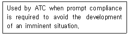
- Hurry
- Speedy
- Expedite
- Swift
(정답률: 60%)
54. 다음은 어떤 용어에 대한 설명인가?
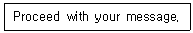
- Approved
- Contact
- Go Ahead
- Say Again
(정답률: 70%)
55. 다음 중 약어의 표현이 적절하지 않은 것을 고르시오.
- DME-Distance Measuring Equipment
- ILS-Instrument Landing System
- ADF-Automatic Direction Finder
- NAV-Navigation Aircraft Vertical
(정답률: 72%)
56. 다음 문장의 밑줄 친 부분과 같은 뜻의 단어는?
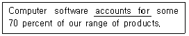
- explains
- produces
- allows for
- constitutes
(정답률: 50%)
57. What kind of time system shall be used by all stations in the telecommunication service?
- Universal Coordinated Time
- Local Mean Time
- Local Time
- International Mean Time
(정답률: 52%)
58. When an error has been made in transmission which word should be spoken?
- CLEAR
- CORRECTION
- REVISION
- SAY AGAIN
(정답률: 69%)
59. Aviation radio phrase “READ BACK”means ;
- Repeat my message back to me.
- My transmission is ended and I expect a response from you.
- Let me know that you have received and understand this message.
- This conversation is ended and no response is expected.
(정답률: 70%)
60. 다음 빈칸에 가장 적합한 것은?
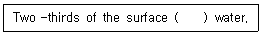
- are
- were
- are the
- is
(정답률: 62%)
61. 항공통신용어 중 “Unable to contact”란 말의 뜻은?
- 어떤 통신국과 교신할 수 없다.
- 어떤 통신국과 교신하면 안된다.
- Negative contact 와 같은 의미이다.
- Positive contact 와 같은 의미이다.
(정답률: 81%)
62. 다음 대화내용 중 ( ) 안에 들어갈 가장 적절한 표현은?
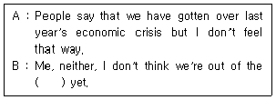
- forest
- bush
- jungles
- woods
(정답률: 57%)
63. 약어 “NOSIG”에 대한 설명으로 가장 적절한 것은?
- It stands for no sign.
- It contains trend type en route forecast.
- It stands for no significant change.
- It means “none”or “nothing to send you”.
(정답률: 40%)
64. 다음 설명에서 ( ) 안에 들어갈 내용으로 적절치 않은 것은?
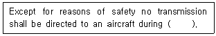
- starting engine
- take-off
- the last part of the final approach
- the landing roll
(정답률: 64%)
65. 다음 중 “I SAY AGAIN ”에 대한 설명으로 적합한 것은?
- That is correct
- A chance has been made to your last clearance
- Wait and I will call you
- Repeat all of your last transmission
(정답률: 68%)
66. 다음 빈칸에 가장 적합한 것은?
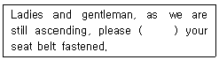
- on
- keep
- take
- did
(정답률: 58%)
67. 다음 문장에 공통으로 사용되는 것은?
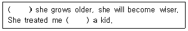
- Like
- At
- As
- By
(정답률: 76%)
68. 항공무선통신에서 숫자 “3”을 송신할 때 발음상의 음이 맞는 단어는?
- thri
- thlee
- tree
- tlee
(정답률: 67%)
69. 괄호 속에 들어갈 가장 적합한 것을 고르시오.
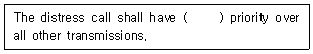
- to absolute
- absolutely
- in absolute
- absolute
(정답률: 72%)
70. 밑줄 친 곳에 알맞은 단어는?
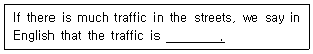
- strong
- big
- great
- heavy
(정답률: 76%)